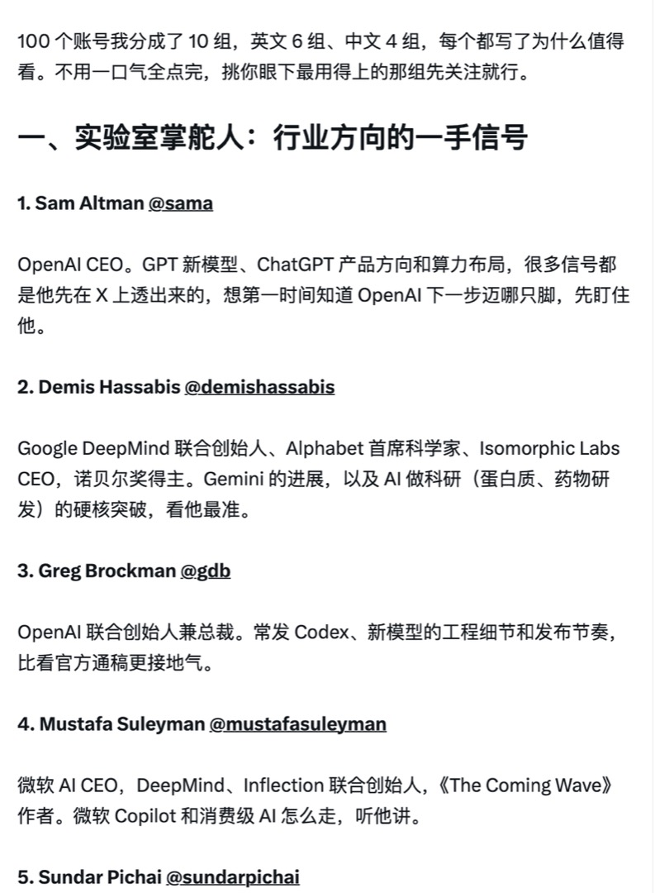
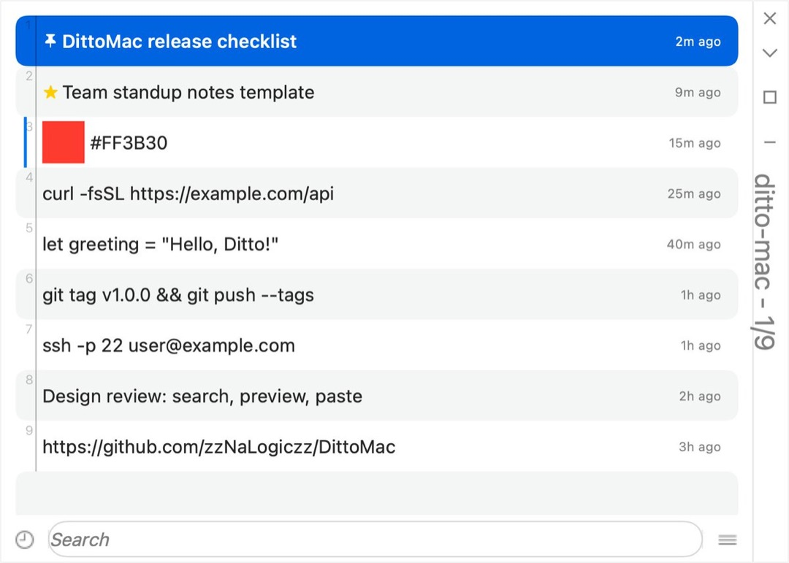
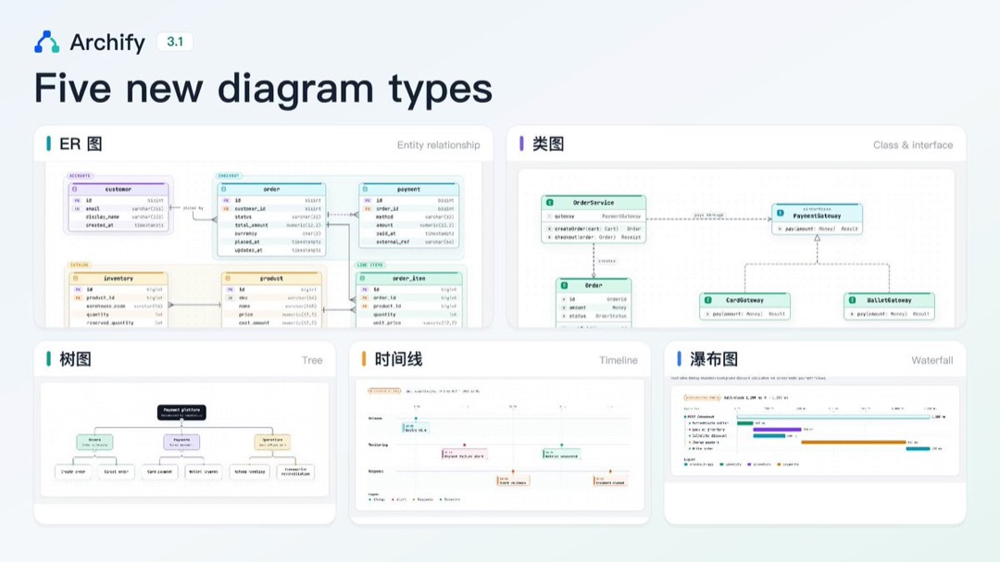
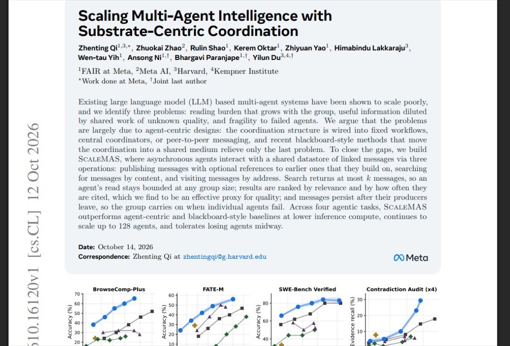

本期速览
02 DittoMac 上线 Mac 原生剪贴板
03 Archify 3.1 扩展至十种图解
04 黄仁勋回应 AI 算力回本质疑
05 ScaleMAS 用介质扩展智能体
01｜100个AI博主按信息流分十组
来源（X） · @AYi_AInotes · 2026-10-15 16:29
学 AI 的差距，很多时候是信息链位置的差距，
所以刷 X 学 AI 最怕两件事，
要么关注了一堆复读机天天吃三手噪音，
要么一次关注几百个大牛最后信息过载全在吃灰。
感谢 @isituking 整理的长文《2026 年 X 上最值得关注的 100 个 AI 博主（全球精选榜单）》，惊喜地发现自己也在榜单，放在了中文区产品、业务与出海这一组。
我觉得比起单纯存下 100 个名字，这份清单真正实用的地方是它把全球 AI 的信息流按上下游切成了 10 个能直接按需取用的小组：
前 6 组是英文一手源头，从实验室掌门人、核心产品负责人到 Karpathy 这类顶级研究者，
后 4 组是中文实战派，把前沿论文和工具拆成能直接跑通的代码、出海生意与工作流。
给兄弟们提炼一个最省时间的抄作业用法，不用全关注，对号入座挑一个抽屉就够了：
→ 平时时间极少、只看大方向的：只盯第 1、2 组（实验室掌舵人与官方号）
→ 天天重度使用 Claude 和 Codex 干活的：直接锁死第 3 组（官方产品负责人）
→ 写代码、搓 Agent 的开发者：看第 4 到 6 组，外加中文区第 9 组
→ 搞业务落地、做产品和出海变现的：看第 7 组
→ 不想啃英文原帖、想高效看深度拆解的：看第 8 组
→ 做视觉、视频和内容创作的：看第 10 组
翻完整个中文区的名单我也有个很深的感触：
做独立开发、写代码和搞出海生意的博主非常多，但真正站在组织发展和真实业务流程里拆解 AI 落地的依然极少。
工具和模型每个月都在刷榜，但把技术塞进真实的公司业务流、变成实打实的产能和收入，中间永远隔着最后十米，
感谢推荐，接下来我继续在这最后十米里替大家死磕探路。

引用内容
司徒K @isituking
我把 X 上的 AI 博主彻底筛选了一遍，精选出含金量最高的 100 个，分好组并写清了推荐理由。
👇 建议先马后看： https://x.com/i/article/2110625670472908800
02｜DittoMac 上线 Mac 原生剪贴板
来源（X） · @Jolyne_AI · 2026-10-16 08:03
DittoMac 就是把 Ditto 做成了 Mac 原生应用，复制的内容都会存起来，然后按 ⌘⇧V 就可以搜索找到并粘贴。作者是用 Claude 改写的，目前局域网同步功能还没做。
需要 macOS 13 以上，并且是 Apple Silicon 的设备。
GitHub：https://github.com/zzNaLogiczz/DittoMac

03｜Archify 3.1 扩展至十种图解
来源（X） · @t20000622yy · 2026-10-15 09:14
Archify 3.1 更新了，这次新增 ER 图、类图、树图、时间线和瀑布图，一共支持十种图解。
梳理项目架构、讨论业务流程、做方案汇报，或者把手绘草图整理清楚，把需求交给 AI，用 Archify 画出来就行。
生成的是可交互的 HTML，可以缩放、查看细节，也能继续通过对话修改。有动态效果，亮色、暗色都支持。
做了一段 30 秒的视频，看看效果👇
开源免费，装进你的 AI Agent 就能用。
GitHub：https://github.com/tt-a1i/archify
官网：https://archify.si

04｜黄仁勋回应 AI 算力回本质疑
来源（X） · @MrPingChecks · 2026-10-15 23:01
几个要点：
1. AI 收入撑得起投资吗？
主持人 Brad Gerstner 算了一笔账：几家大模型公司今年收入加起来约 2000 亿美元，明年要翻到 4000 亿、后年 8000 亿，几万亿的投资才回得了本。
黄仁勋把英伟达的生意拆成三块：约三分之一是跟 AI 无关的传统计算（数据处理、仿真、推荐系统），每年还在涨三四成；前沿实验室只占四分之一到三分之一，而且不是两家，是五六家；剩下三分之一是成千上万家新公司在租算力，相当于下一代的云。所以他说，没必要指望那两家做到上万亿美元收入。
他还给了个总数：到 2030 年前后，全世界每年的基础设施投入在 3 到 4 万亿美元，“更接近 4 万亿”。理由之一是摩尔定律结束了：以前等一年就能用同样的钱买两倍的晶体管，现在想要两倍的算力，就得付两倍的钱。
2. 明年卡在哪？
不是需求，是土地、电力和厂房：审批、发电、建筑工人都跟不上。他说电越紧，客户越会挑每瓦产出最高的卡，所以英伟达的份额反而在涨；一吉瓦数据中心里英伟达能卖的东西，从约 180 亿美元涨到了 400 多亿。
供应也紧：大尺寸芯片的封装基板、硅光器件都缺，“这个缺口几年内都很难补上”。
3. 订单怎么样？
他说客户想要的远多于他能分配的，新订单“几乎每周、每天都在来”；几周前宣布的澳大利亚 2 吉瓦，对英伟达来说约等于 800 亿美元。下一代 Vera Rubin Ultra 快到下单的时候了，客户是没见到产品就下单。
4. 华尔街看错了多少？
Gerstner 拿出一张图：一年前，分析师一致预期英伟达 2027 年收入持平甚至下降，现在是增长 74%；预测上调了一到两倍，股价却只涨了约 20%，市盈率 13 到 14 倍。
黄仁勋回了一句：“女士们先生们，我上次都解释过了。”
05｜ScaleMAS 用介质扩展智能体
来源（X） · @snwiki238337 · 2026-10-15 10:33
但现实是反着的现在的多智能体架构，只要集群规模突破 4~8 个节点，系统就会迅速陷入混乱，每个 Agent 的上下文窗口被海量的冗余发言撑爆；真正有价值的高质量洞察被废话冲垮；而只要其中某一个 Agent 偶尔幻觉，整个协作链路就崩塌。
人类社会能够协同成千上万名学者、工程师完成登月工程或开源 Linux，我们靠的是介质：是论文引用网络、Git 仓库、维基百科这种允许异步发布、检索与同行引用的共享信息底座。
最近，来自哈佛、MIT、Meta FAIR 等机构的学者们发表了一篇直击行业痛点的重磅研究Scaling Multi-Agent Intelligence with Substrate-Centric Coordination。它彻底抛弃了以 Agent 为中心的传统沟通思路，提出了一个颠覆性的框架 ScaleMAS。
论文首先严谨剖析了现有 Agent-Centric 系统的结构性败局：上下文开销随节点数量呈超线性爆炸，昂贵的 Token 预算全花在了上下文上。
此外现在的 agent 节点一多，信噪比急剧下降，关键事实被大量低质回复淹没。脆弱的依赖链条导致哪怕一个 Agent 宕机或格式出错，整体任务直接归零。
我们多 agent 中传统的共享黑板虽然能缓解单点崩溃，但根本解决不了阅读负担过重和信息稀释这两个根本问题。
ScaleMAS 的解法是把学术界的网络搬进多智能体。ScaleMAS 的核心哲学非常纯粹，就是让 Agent 之间完全禁止直接对话，它们唯一能打交道的就是一个异步结构介质。
系统仅开放三个极简原子操作：发布，就是向公共介质写入结构化信息；检索，就是带着问题去介质中搜索相关信息；调阅也就是根据特定消息 ID 直接查看详情。
他们的检索的算法设计很独特，检索结果不仅看字面相关度，还会参考这条信息被其他 Agent 引用的频次。
越是被多数 Agent 验证、引用的推论，在底座中的权重就越高；毫无营养的灌水信息由于零引用，会迅速沉底。
同时由于消息与 Agent 彻底解耦，哪怕某些 Agent 意外崩溃下线，它们留下的引用痕迹依然永久有效，新加入的 Agent 可以无缝协作。
他们实测了该系统可以正向扩展到 128 个 Agent。在覆盖复杂网络研究、代码工程基准上，ScaleMAS分别拿到了 55.1%、80.0%。
这篇论文对于多 agent 中信息流的理解很深刻，参照人类的信息索引和论文式的引用机制很新颖。结果也证明了这是极其有效的。可以说是一个多 agent 的里程碑之作了。
对于 agent 自进化、多 agent 感兴趣的可以看看。
arxiv：https://arxiv.org/abs/2610.16120
